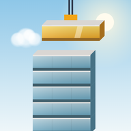
Tower Tap: Stack Famous Towers
Rebuild famous towers from their blueprints, one floor at a time. A calm one-tap precision game for iPhone, iPad, Android and Chrome.
Rebuild famous towers from their blueprints, one floor at a time: a crane swings each floor across the sky and you tap to drop it. From the Great Pyramid and Qutub Minar to modern skyscrapers.
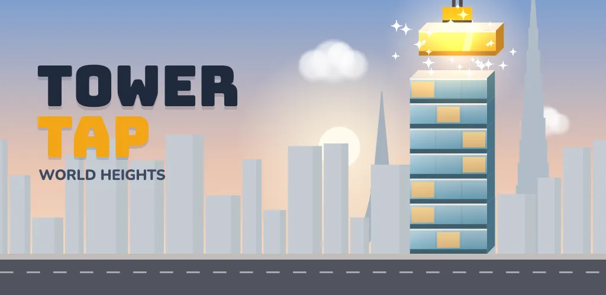
Screenshots
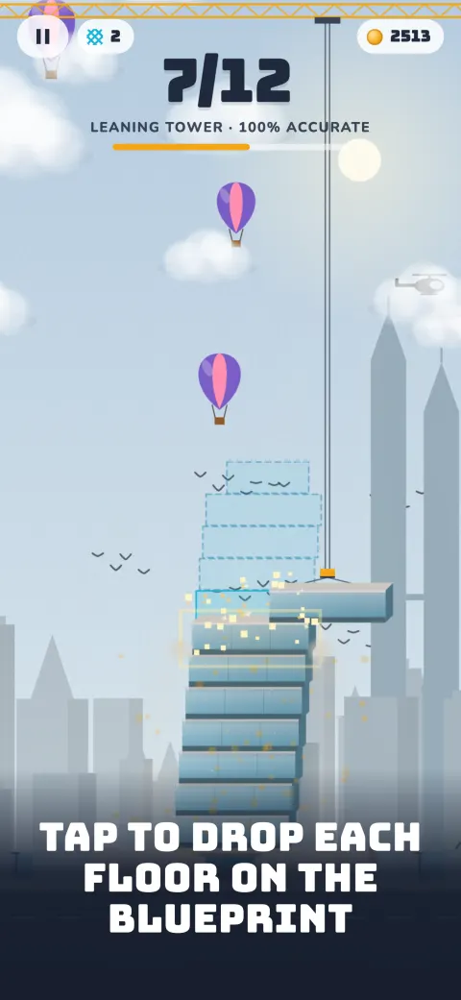
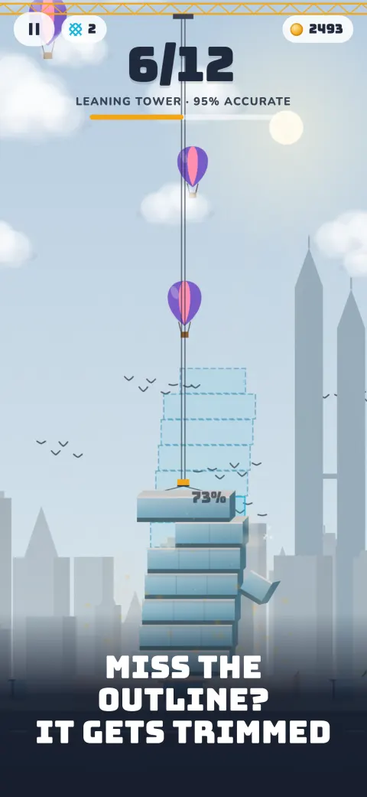
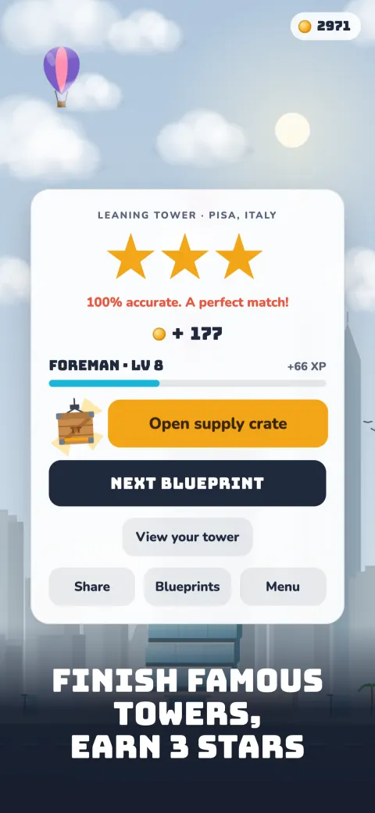
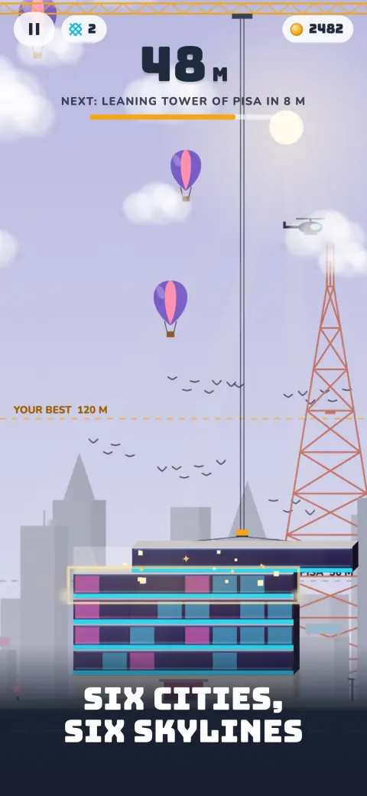
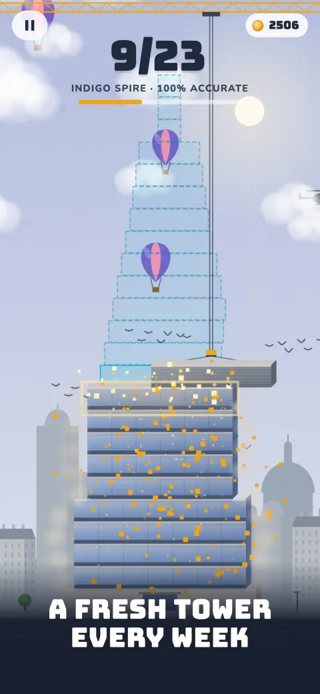
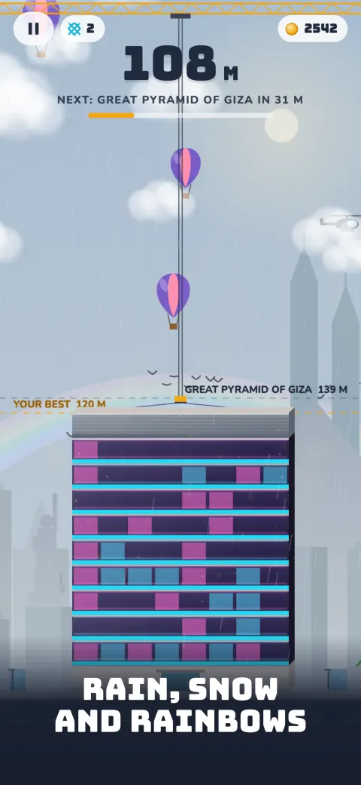
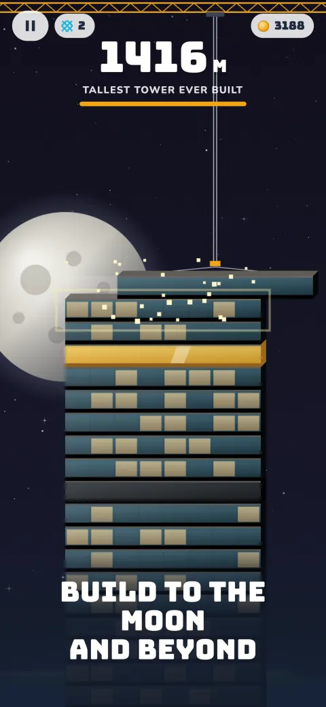
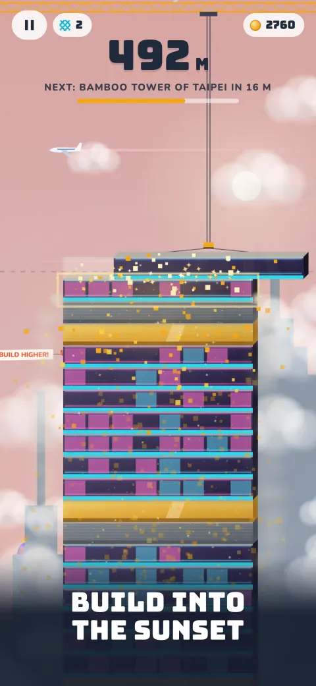
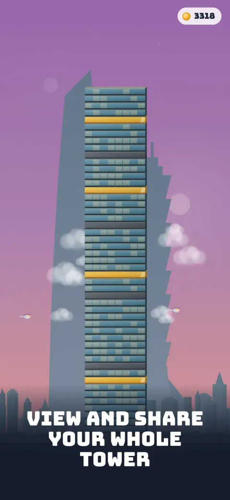
Facts
- Platforms
- iPhone, iPad, Android phones and tablets, and Chrome on your computer
- Price
- Free to download, with optional in-app purchases
- Ads
- Phone and tablet versions show ads; a one-time Remove Ads purchase removes full-screen ads. The Chrome version has no ads or purchases.
- Offline
- Yes on Android and in Chrome. Leaderboards need a connection.
- App Store age rating
- 4+
- Current version
- 1.6.2 (App Store and Google Play), 1.5.1 (Chrome)
- Developer
- Encircle Technologies Private Limited, Rajkot, India
What's new
Version 1.6.2
- Where the law requires it, the game asks the App Store for your age range at first launch, after a significant update and before a purchase, and otherwise at most once a year. Before, it asked on every launch
- The game keeps only the resulting age setting and the date it asked. Delete my data removes both
- The shop's Best value tag now stays on one line on small screens
- Privacy policy updated: the age section, in English and Hindi
Questions and answers
What is Tower Tap and how do you play?
Tower Tap is a one-tap stacking game. A crane swings each floor and you tap to drop it onto the blueprint of a famous tower. Any part that hangs off the outline is trimmed away.
Where can I get Tower Tap?
On the App Store for iPhone and iPad, and on Google Play for Android phones and tablets, as "Tower Tap: Stack Famous Towers". It also runs in Chrome.
Is Tower Tap free? Does it have ads or in-app purchases?
Yes, it is free to download. The phone and tablet versions show ads and offer optional in-app purchases. A one-time Remove Ads purchase removes full-screen ads, and rewarded ads stay optional. The Chrome version has no ads or purchases.
Does Tower Tap work offline?
Yes on Android and in Chrome. Leaderboards need a connection.
What is the Tower Tap Weekly Challenge?
A new tower every Monday, the same for every player. Upgrades and safety nets are switched off, so it is pure skill. Climb the weekly leaderboard to win Bronze, Silver, Gold and Diamond trophies.
Privacy and support
- Privacy policy
- गोपनीयता नीति (हिन्दी)
- Terms of use
- Delete your data
- Support: support@encircletechnologies.com
Made by Encircle Technologies Private Limited, Rajkot, India.